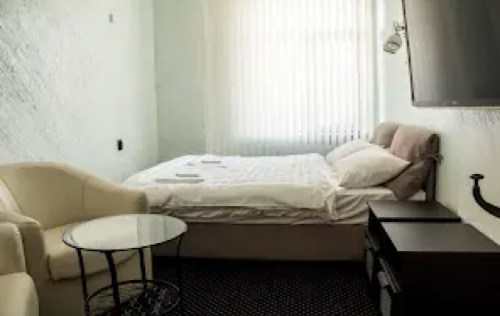
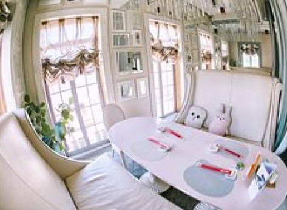

ВЛАДИВОСТОК
“Русский Стамбул”
DiscoveRussia
ВЛАДИВОСТОК
“Русский Стамбул”
Путь
Как добраться?

Из Благовещенска во Владивосток. Цена: от 7100 RUB. Из аэропорта “Кневичи” в центр можно добраться с помощью аэроэкспресса. Цена: 200 RUB.

Поездом из Благовещенска во Владивосток. Цена: от 4000 RUB.

Вполне можно проехать 1452 км от Иркутска доБлаговещенска на авто. Путь займет приблизительно полтора дня с остановками. В стоимость входит: бензин, еда, мотель, платные участки дороги. Цена: от 7000 RUB.
Туризм
Что посетить?


Владивосток — последняя станция Транссибирской железной дороги и база Тихоокеанского флота РФ. Город сочетает в себе удивительный колорит российской Азии с морской романтикой дальних плаваний, футуристичного вида мосты с архитектурой XX века: от модерна до советского конструктивизма.

Владивостокская крепость
Музей «Владивостокская крепость» представляет уникальный комплекс оборонительных сооружений, имеющий статус федерального музея-заповедника. Часть объектов размещена на господствующих высотах, откуда открываются потрясающие виды на морские заливы и бухты, окружающую природу и городские пейзажи. Кроме того, в историческом центре Владивостока находятся выставочные площадки с экспозициями, освещающими историю крепости и ее связь с городом.
Золотой Рог
Можго полюбоваться на один из самых крупных вантовых мостов не только в России, но и в мире. С моста город открывается в голубом обрамлении моря, куда ни брось взгляд, везде оно, бескрайнее… Бухта не замерзает зимой. Можно спуститься на корабельную набережную за морским вокзалом и понаблюдать, как курсируют баржи и корабли. Почему именно рог? Да потому что по форме, очень напоминает эту фигур.
Русский мост
Вантовый Русский мост во Владивостоке соединяет полуостров Назимова за бухтой Улисс с островом Русский — выводит к мысу Новосильского. Он является самым длинным в мире вантовым мостом по протяженности пролета и вторым по высоте. Местные советуют оценить вид на мост с Новосильцевской батареи (находится на самом острове Русский).
Приморский океанариум
Приморский океанариум имеет необыкновенный дизайн. Яркие волшебные краски помещения, искусственные камни и лед, и, конечно, везде установлены красивейшие аквариумы с прозрачной водой. На территории здания океанариума площадью в пять футбольных полей находится 135 самых разных аквариумов, размером — от маленьких до огромных. В одном из самых больших обустроен удивительный 70-метровый тоннель шириной 2,5 м, по которому могут проходить посетители, любуясь на разнообразных рыб.
Отели
Где остановиться переночевать?

Отель "TIME"
"Удобное расположение, рядом есть магазины, кафе, рестораны, суши бар." "Номер за 2500, отличное соотношение цена-качество."
Цена: 2265 RUB.
"Уютное место, хороший ремонт, приветливые администраторы." "Особенно понравилось, что есть общая кухня, где можно приготовить еду! :)"
Цена: 2415 RUB.
Гостевой дом “Рассвет”
“Boutique Hotel Cruise”
"Воду в номер приносят по желанию и потребности клиента." "Отличный небольшой отель на 5 номеров и есть 2 апартамента."
Цена: 6568 RUB.
Питание
Где остановиться перекусить?
“Pizzaiolo”
ТИП КУХНИ Итальянская, Европейская, Пицца ВРЕМЯ ПРИЕМА ПИЩИ Завтрак, Обед, Ужин, Бранч, Открыто допоздна, Напитки
“OGONEK”
ТИП КУХНИ Европейская, Русская, Морепродукты, Гриль, Современная ВРЕМЯ ПРИЕМА ПИЩИ Обед, Ужин, Открыто допоздна, Завтрак, Напитки
ТИП КУХНИ Азиатская, Японская, Морепродукты, Суши, Супы ВРЕМЯ ПРИЕМА ПИЩИ Обед, Ужин, Бранч, Напитки
“Токио Каваии”

Владивосток поражает своими грандиозными мостами! Множество музеев и объектов Великой Отечественной войны манят множество туристов! Далее по курсу Камчатка. Отправляйтесь туда, чтобы насладиться уникальной природой полуострова!
Путешествуй с DiscoveRussia